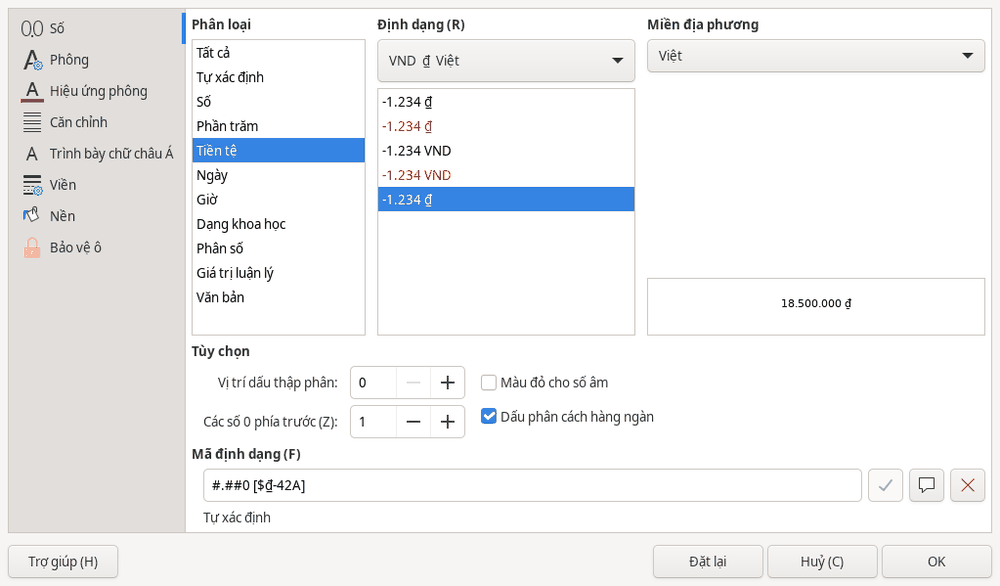

Bảng tính
Bảng tính: định dạng và sắp xếp
Định dạng số, ngày và tiền tệ
- Chọn ô hoặc vùng ô cần định dạng.
- Mở hoặc nhấn Ctrl+1.
- Trong mục , chọn phân loại phù hợp, chẳng hạn , hoặc .
- Kiểm tra phần xem trước, rồi bấm .

Dùng các lệnh định dạng của HST
- Chọn ô hoặc vùng ô cần đổi cách hiển thị.
- Mở menu hoặc thẻ .
- Chọn một trong các lệnh dưới đây.
| Lệnh | Cách hiển thị |
|---|---|
Ví dụ 1.250.000 ₫. | |
Ngày, tháng, năm theo dạng dd/mm/yyyy. | |
| Giá trị dưới dạng phần trăm. |
Các lệnh định dạng của HST chỉ thay đổi cách hiển thị, không thay đổi giá trị và công thức.
Sắp xếp và lọc
Các lệnh sắp xếp và lọc dữ liệu nằm trên thẻ . Tại đây có và .